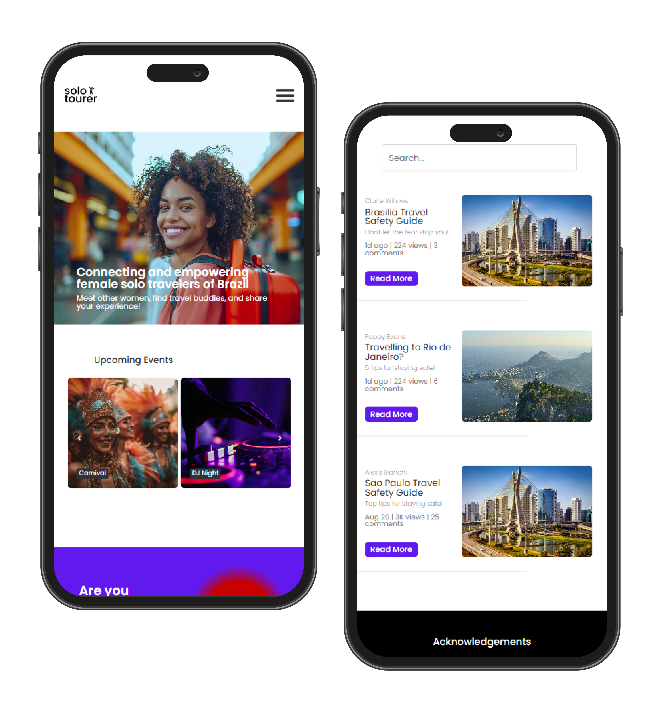

Solo Tourer is an app and website that aims to help women, specifically between the ages of 23 to 29, safely and confidently solo travel across Rio de Janeiro, Brazil.
Whilst there is a rising interest in solo traveling within young women, safety is still a major concern.
Travel apps often focus on one type of service or purpose: a local safety app, building travel communities or presenting travel tips and event booking.
Solo Tourer provides a holistic experience with all of those features and more in one place, which helps users have a connected and safe experience.


All in one, right in your pocket.
Attend events near you, find your people and explore Brazil with confidence!
Available on iOS and Android